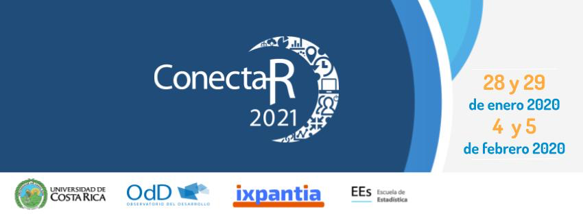

Te invitamos a participar en el Encuentro Virtual de Usuarios R en Latinoamérica ConectaR2021. Crearemos un espacio virtual para compartir distintas experiencias de la comunidad de personas usuarias R en industria, academia, ciencia ciudadana y enseñanza, durante los días 28 y 29 de enero y 4 y 5 de febrero. De esta forma queremos incentivar el uso de R, fomentar el aprendizaje y el desarrollo de paquetes en R adaptados a nuestras necesidades en Latinoamérica.
Las actividades serán tanto sincrónicas como asincrónicas, nuestro objetivo es facilitar un espacio de comunicación abierta, inclusivo, y con facilidades tecnológicas para conocernos mejor, intercambiar ideas y apoyar nuevas colaboraciones entre personas usuarias R hispanoparlante.
Los temas en los cuales nos enfocamos son:
Enseñanza - Industria - Academia - Gobierno y Ciencia Ciudadana
Y más específicamente en: